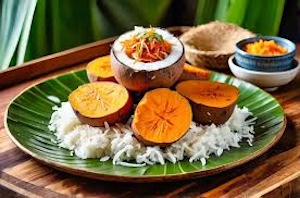
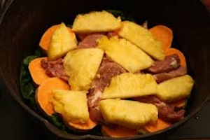

Delicious Dishes
The cuisine of Papua New Guinea is diverse, with staples including sweet potatoes, taro, and sago. Traditional methods of cooking often involve steaming in the ground.
 Traditional Foods
| Food | Description |
|---|---|
| Sago | A staple food made from the pith of sago palm, often served as a pudding or mixed with other dishes. |
| Sweet Potatoes | A major carbohydrate source, often cooked and served with meats or vegetables. |
| Taro | A root vegetable, similar to potato, that is boiled or roasted and enjoyed with various accompaniments. |
| Kukurau | A traditional dish made from fermented flesh of the sago tree, typically steamed in bamboo. |
| Mokoli | Cooked and mashed taro, often flavored with coconut milk and served as a side dish. |
| Fish | Often grilled or smoked, fish is a common protein source for many communities living near coastal areas. |
The traditional food of Papua New Guinea (PNG) is a vibrant reflection of the country's diverse cultures and geographic features, where over 800 distinct languages are spoken and various ethnic groups coexist. The cuisine is heavily based on locally grown staples such as sweet potatoes, taro, yams, and sago, which are often prepared using traditional methods like steaming in underground ovens known as "mumu." Fresh fish, wild game, and an array of tropical fruits and vegetables also play crucial roles in the diet. Each region's unique ingredients and cooking techniques contribute to a rich tapestry of flavors, with dishes often served communally, emphasizing the importance of shared meals in PNG's social and cultural practices. Additionally, traditional foods are often intertwined with local customs and celebrations, making them a significant aspect of the nation's heritage and identity.